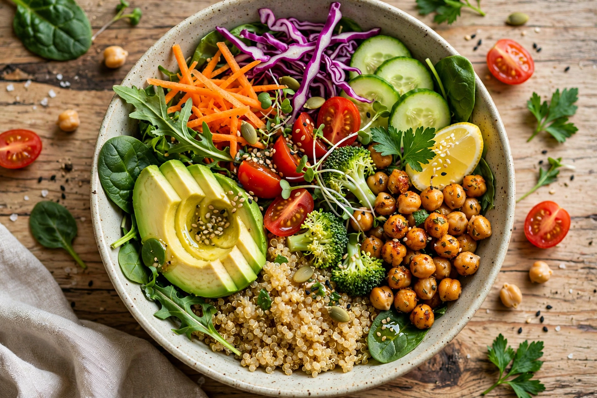

From Wikipedia, the free encyclopedia

| Veganism | |
|---|---|
| Definition | Excluding all forms of exploitation of, and cruelty to, animals for food, clothing, or any other purpose, as far as practicable (Vegan Society) |
| Term coined | 1944, by Donald Watson, England |
| Key organisation | The Vegan Society (founded 1944) |
| Motivations | Animal ethics, environment, health |
| Related terms | Vegetarianism, plant-based diet, animal rights |
Veganism is the practice of abstaining from the use of animal products — particularly in diet — and an associated philosophy that rejects the commodity status of animals. A person who follows the diet or philosophy is known as a vegan. Dietary vegans (or "strict vegetarians") refrain from consuming meat, eggs, dairy products, and other animal-derived substances such as honey and gelatin. Ethical vegans extend the philosophy to other areas of life, avoiding leather, wool, silk, cosmetics tested on animals, zoos and circuses that exploit animals, and similar practices.
Avoidance of animal flesh on ethical or religious grounds is ancient: Jain, Hindu, and Buddhist traditions in India practised forms of vegetarianism for millennia, and the Greek philosopher Pythagoras and his followers abstained from meat in the 6th century BCE. Organised vegetarianism in the West grew in the 19th century — the Vegetarian Society was founded in England in 1847 — but early "vegetarians" varied in whether they ate eggs and dairy. In November 1944, Donald Watson and fellow members of the Leicester branch split from the Vegetarian Society over the use of dairy and eggs, founded The Vegan Society, and coined the word "vegan" from the beginning and end of "vegetarian." The movement's ethical framework was later developed by philosophers such as Peter Singer (Animal Liberation, 1975) and Tom Regan (The Case for Animal Rights, 1983). From the 2000s, environmental and health arguments greatly expanded veganism's reach, alongside the growth of commercial plant-based foods such as oat milk, meat substitutes, and dedicated vegan restaurants.
A vegan diet centres on grains, legumes, vegetables, fruits, nuts, and seeds, with manufactured substitutes (plant milks, tofu, tempeh, seitan, meat analogues) widely available. Major dietetic bodies, including the Academy of Nutrition and Dietetics, hold that appropriately planned vegan diets are nutritionally adequate for all life stages and may reduce risk of heart disease, type 2 diabetes, and some cancers. Poorly planned diets risk deficiencies in vitamin B12 — which vegans must obtain from fortified foods or supplements — and require attention to vitamin D, iodine, calcium, iron, zinc, and long-chain omega-3s (EPA/DHA). Studies consistently find vegans have lower average BMI and LDL cholesterol, alongside lower bone-mineral density in some cohorts.
Ethical veganism rests on the claim that animals are sentient beings whose suffering and interests matter morally; industrial animal agriculture — which slaughters more than 70 billion land animals annually — is therefore unjustifiable when plant-based alternatives exist. Philosophical positions range from Singer's utilitarian anti-speciesism to Regan's rights-based abolitionism, which rejects all animal use rather than merely cruel use.
Livestock supply chains account for roughly 14.5% of anthropogenic greenhouse-gas emissions by FAO estimates, and large-scale assessments (notably Poore & Nemecek, Science, 2018) find that avoiding meat and dairy is among the most effective individual actions for reducing food-related land use, water use, and emissions.
Many adopt veganism for health, and religious traditions contribute: Seventh-day Adventists often practise vegetarian or vegan diets; Rastafari ital eating and Jain practice approach or reach veganism; and some interpret Buddhist and Hindu ahimsa (non-violence) as requiring it.
Vegans remain a small minority — surveys typically find 1–3% of adults in the UK, US, and Germany, with higher rates of vegetarianism in India. January's "Veganuary" campaign (founded 2014) signs up hundreds of thousands of participants annually. Veganism has attracted criticism from some farmers' groups, nutrition sceptics, and cultural commentators, and debates continue within the movement over strategy, purity versus pragmatism, and the role of lab-grown (cultivated) meat.